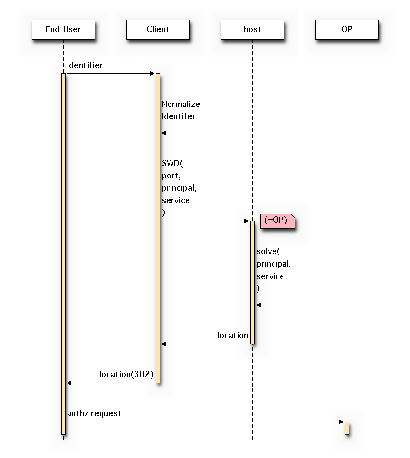

OpenID Connect Discovery 1.0¶
Based on OpenID Connect Discovery 1.0 - draft 07
(December 22, 2011)
Todo
Section 5 and 6 is TBD.
Abstract¶
OpenID Connect 1.0 is a simple identity layer on top of the OAuth 2.0 protocol. It allows Clients to verify the identity of the End-User based on the authentication performed by an Authorization Server, as well as to obtain basic profile information about the End-User in an interoperable and RESTful manner.
This specification provides a mechanism for the OpenID Connect client to discover the user‘s OpenID Provider as well as the necessary endpoints used by the OpenID Connect protocol suite.
(draft 07 , Dec 22,2011)
1. Introduction¶
In order for an OpenID Client to utilize OpenID Connect services for a user, the Client needs to know where the OpenID Provider is. OpenID Connect uses Simple Web Discovery [SWD] to locate the OpenID Provider for an End-User.
Once an OpenID Provider is identified, the endpoint and other configuration information for that OP is retrieved from a well-known location as a JSON document.
(draft 07, Dec ,22, 2011)
1.1. Requirements Notation and Conventions¶
The key words “MUST”, “MUST NOT”, “REQUIRED”, “SHALL”, “SHALL NOT”, “SHOULD”, “SHOULD NOT”, “RECOMMENDED”, “MAY”, and “OPTIONAL” in this document are to be interpreted as described in RFC 2119 [RFC2119].
Throughout this document, values are quoted to indicate that they are to be taken literally. When using these values in protocol messages, the quotes MUST NOT be used as part of the value.
(Draft 07, Dec 22,2011 )
1.2. Terminology¶
This specification uses the terms “Access Token”, “Refresh Token”, “Authorization Code”, “Authorization Grant”, “Authorization Server”, “Authorization Endpoint”, “Client”, “Client Identifier”, “Client Secret”, “Protected Resource”, “Resource Owner”, “Resource Server”, and “Token Endpoint” defined by OAuth 2.0 [OAuth2.0], and the terms defined by OpenID Connect Messages 1.0 [OpenID.Messages]. This specification also defines the following terms:
- Principal
- An Entity that is the target of a request in Simple Web Discovery.
- Identifier
- An Identifier is either an http or https URI (commonly referred to as a URL within this document), or an account URI. This document defines various kinds of Identifiers, designed for use in different contexts.
(draft 07, Dec 22,2011 )
2. Provider Discovery¶
OpenID Provider discovery is optional; if a Relying Party knows the OP information through an out-of-band mechanism, they can skip this step and proceed to Section 3.
Provider discovery requires the following information to make a discovery request:
- Principal
- Identifier of the target End-User who is the subject of the discovery request
- Host
- Server where a Simple Web Discovery service is hosted
- Service
- URI identifying the type of service whose location is requested
OpenID Connect uses the following discoverable service in Simple Web Discovery [SWD]:
| Service Type | URI |
| OpenID Connect Issuer | http://openid.net/specs/connect/1.0/issuer |
To start discovery of OpenID endpoints, the End-User supplies an Identifier [1] to the Client or Relying Party. The Client applies the normalization rules to the Identifier to extract the principal and host. Then it makes a HTTPS request to the host’s Simple Web Discovery [SWD] endpoint with the principal and service parameters to obtain the location of the requested service. The Client MUST perform a TLS/SSL server certificate check, per RFC 6125 [RFC6125].
What MUST be returned in the response is the issuer. This includes URI scheme, HOST, and OPTIONALLY, port.
| [1] | What identifier ? Must be a user identifier. |

(Draft 07, Dec 22,2011 )
2.1. Identifier Normalization¶
The purpose of normalization is to extract a normalized principal and host from the user input. This is then used as input to SWD to discover the issuer.
The user Identifier SHOULD be one of the following:
- E-Mail address
- URL
The Identifier normalization rules MAY be extended by additional specifications to enable other identifier types such as telephone numbers or XRIs [XRI_Syntax_2.0] to also be used.
URLs without a “host” portion are not supported by this specification.
(Draft 07, Dec 22, 2011 )
2.1.1. Identifier Type¶
Identifiers starting with the XRI [XRI_Syntax_2.0] global context symbols (‘=’,’@’, and ‘!’) are RESERVED. Processing of these identifiers is out of scope for this specification.
Any Identifier that contains the ‘@’ character in any position other than the first position MUST be treated as an e-mail address.
All other Identifiers MUST be treated as URLs. URLs containing the ‘@’ character must escape any ‘@’ characters so that they are represented as %40.
Note
- Check if the first character in [‘=’,’@’,’!’] -> XRI
- Check “@” in Identifier -> Email
- Otherwise -> URL
(draft 07, Dec 22, 2011 )
2.1.2. E-Mail Address
Identifiers using e-mail address syntax MUST conform to the “addr-spec” syntax of RFC 5322 [RFC5322] and MUST NOT contain any syntax designated by that specification as being obsolete.
If the Identifier is an e-mail address, the SWD principal value is the entire e-mail address and the SWD host value is the “domain” portion of the “addr-spec”.
Todo
Check the RFC 5322 ( Internet Message Format )
(Draft 07, Dec 22,2011 )
2.1.3. URL¶
A URL Identifier is normalized according to the following rules:
- If the URL does not have an RFC 3986 [RFC3986] “scheme” portion, the “https” scheme is prefixed to the URL, with the “scheme” portion being separated from the “authority” portion by a ”://” delimiter string. [2]
- If the URL contains a fragment portion, it MUST be stripped off together with the fragment delimiter character “#”. [3]
- The resulting URL is used as the SWD principal. The SWD host value is extracted from the “authority” portion (as defined by RFC 3986 [RFC3986]) of the URL by concatenating the RFC 3986 host and port values of the URL. See Section 2.2.3 for a non-normative example.
| [2] | hoge.com -> https://hoge.com |
| [3] | http://hoge.com#id=hogehoge -> http://hoge.com |
Todo
Check RFC 3986
2.2. Non-Normative Examples¶
(Draft 07, Dec 22,2011 )
2.2.1. E-Mail Address¶
To find the issuer for the given e-mail address, joe@example.com, the SWD parameters are as follows:
| SWD Parameter | Value |
| principal | joe@example.com |
| host | example.com |
| service | http://openid.net/specs/connect/1.0/issuer |
Following the SWD specification, the Client would make the following request to get the discovery information:
GET /.well-known/simple-web-discovery?principal=joe%40example.com&service=http%3A%2F%2Fopenid.net%2Fspecs%2Fconnect%2F1.0%2Fissuer HTTP/1.1
Host: example.com
HTTP/1.1 200 OK
Content-Type: application/json
{
"locations":["https://server.example.com"]
}
(Draft 07, Dec 22,2011 )
2.2.2. URL¶
To find the issuer for the given URL, https://example.com/joe, the SWD parameters are as follows:
| SWD Parameter | Value |
| principal | https://example.com/joe |
| host | example.com |
| service | http://openid.net/specs/connect/1.0/issuer |
Following the SWD specification, the Client would make the following request to get the discovery information:
GET /.well-known/simple-web-discovery?principal=https%3A%2F%2Fexample.com%2Fjoe&service=http%3A%2F%2Fopenid.net%2Fspecs%2Fconnect%2F1.0%2Fissuer HTTP/1.1
Host: example.com
HTTP/1.1 200 OK
Content-Type: application/json
{
"locations":["https://server.example.com"]
}
( Draft 07, Dec 22, 2011 )
2.2.3. Hostname & Port¶
To find the issuer for the given hostname, example.com:8080, the SWD parameters are as follows:
| SWD Parameter | Value |
| principal | https://example.com:8080/ |
| host | example.com:8080 |
| service | http://openid.net/specs/connect/1.0/issuer |
Following the SWD specification, the Client would make the following request to get the discovery information:
GET /.well-known/simple-web-discovery?principal=https%3A%2F%2Fexample.com%3A8080%2F&service=http%3A%2F%2Fopenid.net%2Fspecs%2Fconnect%2F1.0%2Fissuer HTTP/1.1
Host: example.com:8080
HTTP/1.1 200 OK
Content-Type: application/json
{
"locations":["https://server.example.com"]
}
(Draft 07, Dec 22, 2011 )
3. Provider Configuration Information¶
This step is optional. The OpenID Provider endpoints and configuration information may be obtained out-of-band.
Using the issuer discovered in Section 2 or through direct configuration, the OpenID Provider’s configuration can be retrieved.
OpenID Providers MUST make available a JSON document at the path .well-known/openid-configuration. The syntax and semantics of .well-known are defined in RFC 5785 [RFC5785]. openid-configuration MUST point to a JSON document compliant with this specification.
OpenID Providers MUST support receiving SWD requests via TLS 1.2 RFC 5246 [RFC5246] and/or TLS 1.0 [RFC2246] and MAY support other transport layer security mechanisms of equivalent security.
(draft 07, Dec 22,2011)
3.1. Provider Configuration Request¶
An OpenID Provider Configuration Document MUST be queried using an HTTPS GET request at the previously specified path. The Client MUST perform a TLS/SSL server certificate check, per RFC 6125 [RFC6125].
Todo
Look at RFC 6125 ( Representation and Verification of Domain-Based Application Service Identity within Internet Public Key Infrastructure Using X.509 (PKIX) Certificates in the Context of Transport Layer Security (TLS) )
The Client would make the following request to the issuer to get the Configuration information.
GET /.well-known/openid-configuration HTTP/1.1
Host: example.com
(draft 07, Dec 22,2011 )
3.2. Provider Configuration Response¶
The response is a set of Claims about the OpenID Provider’s configuration, including all necessary endpoints, supported scopes, and public key location information.
The response MUST return a plain text JSON object that contains a set of Claims that are a subset of those defined below.
Claims that return multiple values are JSON arrays. Claims with 0 elements must be omitted from the response.
Other Claims MAY also be returned.
| Claim | Type | Description |
| version | string | Version of the provider response. “3.0” is the default. |
| issuer | string | The https: URL with no path component that the OP asserts as its Issuer Identifier |
| authorization_endpoint | string | URL of the OP’s Authentication and Authorization Endpoint [OpenID.Messages] |
| token_endpoint | string | URL of the OP’s OAuth 2.0 Token Endpoint [OpenID.Messages] |
| userinfo_endpoint | string | URL of the OP’s UserInfo Endpoint [OpenID.Messages] |
| check_id_endpoint | string | URL of the OP’s Check ID Endpoint [OpenID.Messages] |
| refresh_session_endpoint | string | URL of the OP’s Refresh Session Endpoint [OpenID.Session] |
| end_session_endpoint | string | URL of the OP’s End Session Endpoint [OpenID.Session] |
| jwk_url | string | URL of the OP’s JSON Web Key [JWK] document. Server’s signing Key |
| jwk_encryption_url | string | URL of the OP’s JSON Web Key [JWK] document. Server’s Encryption Key, if not present, its value is the same as the URL provided by jwk_url |
| x509_url | string | URL of the OP’s X.509 certificates in PEM format. |
| x509_encryption_url | string | URL of the OP’s X.509 certificates in PEM format. Server’s Encryption Key, if not present its value is the same as the URL provided by x509_url |
| registration_endpoint | string | URL of the OP’s Dynamic Client Registration Endpoint [OpenID.Registration] |
| scopes_supported | array | A JSON array containing a list of the OAuth 2.0 [OAuth2.0] scope values that this server supports. The server MUST support the openid scope value. |
| response_types_supported | array | A JSON array containing a list of the OAuth 2.0 response_type that this server supports. The server MUST support the code response_type. |
| acrs_supported | array | A JSON array containing a list of the Authentication Context Class References that this server supports. |
| user_id_types_supported | array | A JSON array containing a list of the user identifier types that this server supports. Valid types include pairwise and public. |
| userinfo_algs_supported | array | A JSON array containing a list of the JWS [JWS] and JWE [JWE] signing and encryption algorithms supported by the UserInfo Endpoint to encode the JWT [JWT]. |
| id_token_algs_supported | array | A JSON array containing a list of the JWS [JWS] and JWE [JWE] signing and encryption algorithms supported by the Authorization Server for the ID Token to encode the JWT [JWT]. |
| request_object_algs_supported | array | A JSON array containing a list of the JWS [JWS] and JWE [JWE] signing and encryption algorithms supported by the Authorization Server for the OpenID Request Object described in Section 2.1.2.1 of OpenID Connect Messages 1.0 [OpenID.Messages] to encode the JWT [JWT]. Servers SHOULD support HS256. |
| token_endpoint_auth_types_supported | array | A JSON array containing a list of authentication types supported by this Token Endpoint. The options are client_secret_post, client_secret_basic, client_secret_jwt, and private_key_jwt, as described in Section 2.2.1 of OpenID Connect Messages 1.0 [OpenID.Messages]. Other Authentication types may be defined by extension. If unspecified or omitted, the default is client_secret_basic HTTP Basic Authentication Scheme as specified in section 2.3.1 of OAuth 2.0 [OAuth2.0]. |
| token_endpoint_auth_algs_supported | array | A JSON array containing a list of the JWS [JWS] signing algorithms supported by the Token Endpoint for the private_key_jwt method to encode the JWT [JWT]. Servers SHOULD support RS256. |
Example response:
{
"authorization_endpoint": "https://server.example.com/connect/authorize",
"issuer" : "https://server.example.com",
"token_endpoint": "https://server.example.com/connect/token",
"token_endpoint_auth_types_supported": ["client_secret_basic", "private_key_jwt"],
"userinfo_endpoint": "https://server.example.com/connect/user",
"check_id_endpoint": "https://server.example.com/connect/check_id",
"refresh_session_endpoint": "https://server.example.com/connect/refresh_session",
"end_session_endpoint": "https://server.example.com/connect/end_session",
"jwk_url": "https://server.example.com/jwk.json",
"registration_endpoint": "https://server.example.com/connect/register",
"scopes_supported": ["openid", "profile", "email", "address"],
"response_types_supported": ["code", "code id_token", "token id_token"],
"acrs_supported": ["1","2","http://id.incommon.org/assurance/bronze"],
"user_id_types_supported": ["public", "pairwise"],
"userinfo_algs_supported": ["HS256", "RS256", "A128CBC", "A128KW", "RSA1_5"],
"id_token_algs_supported": ["HS256", "RS256", "A128CBC", "A128KW", "RSA1_5"],
"request_object_algs_supported": ["HS256", "RS256", "A128CBC", "A128KW", "RSA1_5"]
}
(Draft 07, Dec 22, 2011)
3.3. Provider Configuration Verification¶
If the configuration response contains the issuer element, the value MUST exactly match the issuer for the URL that was directly used to retrieve the configuration. Since the discovery process allows for multiple levels of redirection, this issuer URL be different from the one originally used to begin the discovery process.
(draft 07, Dec 22,2011)
4. String Operations¶
Processing some OpenID Connect messages requires comparing values in the messages to known values. For example, the member names in the provider configuration response might be compared to specific member names such as issuer. Comparing Unicode strings, however, has significant security implications.
Therefore, comparisons between JSON strings and other Unicode strings MUST be performed as specified below:
- Remove any JSON applied escaping to produce an array of Unicode code points.
- Unicode Normalization [USA15] MUST NOT be applied at any point to either the JSON string or to the string it is to be compared against.
- Comparisons between the two strings MUST be performed as a Unicode code point to code point equality comparison.
In several places, this specification uses space delimited lists of strings. In all such cases, only the ASCII space character (0x20) MAY be used for this purpose.
(draft 07, Dec 22, 2011 )
7. References¶
(draft 07, Dec 22, 2011 )
7.1. Normative References¶
- JWE
- Jones, M., Rescorla, E., and J. Hildebrand, “JSON Web Encryption (JWE),” December 2011.
- JWK
- Jones, M., “JSON Web Key (JWK),” December 2011.
- JWS
- Jones, M., Balfanz, D., Bradley, J., Goland, Y., Panzer, J., Sakimura, N., and P. Tarjan, “JSON Web Signature,” December 2011.
- JWT
- Jones, M., Balfanz, D., Bradley, J., Goland, Y., Panzer, J., Sakimura, N., and P. Tarjan, “JSON Web Token,” December 2011.
- OAuth2.0
- Hammer-Lahav, E., Ed., Recordon, D., and D. Hardt, “OAuth 2.0 Authorization Protocol,” September 2011.
- OpenID.Messages
- Sakimura, N., Recordon, D., Bradley, J., de Medeiros, B., Jones, M., and E. Jay, “OpenID Connect Messages 1.0,” December 2011.
- OpenID.Registration
- Sakimura, N., Bradley, J., and M. Jones, “OpenID Connect Dynamic Client Registration 1.0,” December 2011.
- OpenID.Session
- Sakimura, N., Bradley, J., Jones, M., de Medeiros, B., Mortimore, C., and E. Jay, “OpenID Connect Session Management 1.0,” December 2011.
- RFC2119
- Bradner, S., “Key words for use in RFCs to Indicate Requirement Levels,” BCP 14, RFC 2119, March 1997 (TXT, HTML, XML).
- RFC2246
- Dierks, T. and C. Allen, “The TLS Protocol Version 1.0,” RFC 2246, January 1999 (TXT).
- RFC3986
- Berners-Lee, T., Fielding, R., and L. Masinter, “Uniform Resource Identifier (URI): Generic Syntax,” STD 66, RFC 3986, January 2005 (TXT, HTML, XML).
- RFC5246
- Dierks, T. and E. Rescorla, “The Transport Layer Security (TLS) Protocol Version 1.2,” RFC 5246, August 2008 (TXT).
- RFC5322
- Resnick, P., Ed., “Internet Message Format,” RFC 5322, October 2008 (TXT, HTML, XML).
- RFC5785
- Nottingham, M. and E. Hammer-Lahav, “Defining Well-Known Uniform Resource Identifiers (URIs),” RFC 5785, April 2010 (TXT).
- RFC6125
- Saint-Andre, P. and J. Hodges, “Representation and Verification of Domain-Based Application Service Identity within Internet Public Key Infrastructure Using X.509 (PKIX) Certificates in the Context of Transport Layer Security (TLS),” RFC 6125, March 2011 (TXT).
- SWD
- Jones, M. and Y. Goland, “Simple Web Discovery,” December 2011.
- USA15
- Davis, M., Whistler, K., and M. Dürst, “Unicode Normalization Forms,” Unicode Standard Annex 15, 09 2009.
(draft 07, Dec 22,2011 )
7.2. Informative References¶
- XRI_Syntax_2.0
Reed, D. and D. McAlpin, “Extensible Resource Identifier (XRI) Syntax V2.0,” November 2005 (HTML, PDF).
(draft 07, Dec 22 ,2011 )